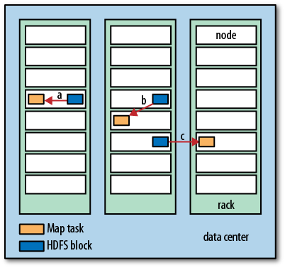
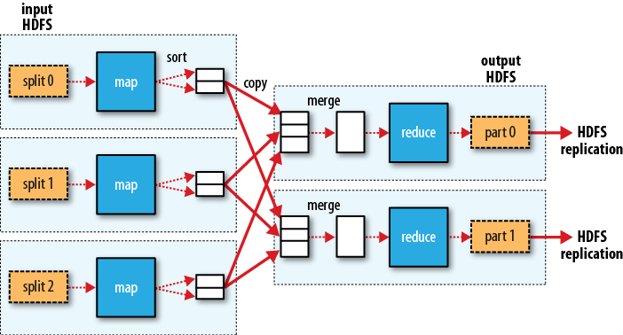

Sun Jan 20 05:40:31 CST 2013
Mapper Reduce
-
MapReduce将处理过程分为两个阶段：map, reduce
-
每个阶段都以key-value作为输入和输出。类型可能由开发者来决定。
-
开发者需要开发两个函数：map funciton, reduce function
-
reduce function的输入类型必须和map function的输出类型对应起来
MapReduce Job
-
代表用户想要做的一件工作
-
由三部分组成：做为输入的数据input data, MapReduce program(工作程序), 配置信息configuration
-
Hadoop将一个job分解成task
-
有两类task:map task, reduce task
-
有两种结点来控制job的执行：一个jobtracker, 多个tasktracker
-
jobtracker负责将task分配给tasktracker, 以此来协调整个job的执行
-
tasktracker负责运行task,并将进度报告传给jobtracker
-
jobtracker记录了个一个job所有task的progress
-
一个task失败了，jobtracker可以将这个task重新分配给一个tasktracker
Input Splits:
-
hadoop将一个job的输入，切分成固定大小的数据片
-
数据片的大小最好就是HDFS block的大小, 这是保证数据在单一结点的最大的单位
-
因为hadoop为尽力在输入数据所在的结点运行map task,可以节省网络带宽 这就是data locality opertimization
-
如果输入数据所在所有结点都在运行其他map task, hadoop 会在同一机架中寻找可能的结点运行map task
-
如果这也不行，只能跨机架运行了

map task:
-
map task输出写入本地磁盘
-
map task的输出是中间值，它将作为reduce task的输入
-
整个job完成就可以丢弃了
reduce task:
-
reduce task并不具备data locality特性
-
因为一个trace task的输入可能来自所有的map task
-
排好序的map task输出将通过网络传输结reduce task所在的结点, 然后merge数据，再传给reduce function
-
reduce task的结果将存入HDFS,这是为了保证数据的可靠性
-
reduce task的数量将不是能输入的大小决定的，而是单独指定的
多reduce task时:
-
每个map task会将输出进行切分，为每一个reduce task创建一份数据
-
每一份数据可能包含多个key和其对应的value
-
但同一个key的所有数据必须属于同一份数据
-
用户可以指定切分的函数，默认的是以hash切分的，工作的挺好
Combiner Function:
-
MapReduce最大的限制将在网络带宽
-
应当尽力减少map task与reduce task之间的数据传输
-
combiner function不能代替reduce funcition
-
它用来减少map task与reduce task之间的数据传输
-
所以创建一个MapReduce job时，最好考虑一下能否使用一个combiner function
